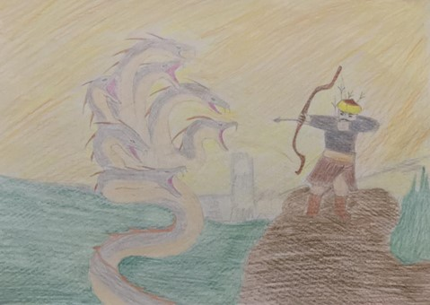

Ben Salur Kazan… Dede Korkut Kitabı’nın başkahramanlarından biriyim. Hanlar Hanı Bayındır Han’ın damadı, boyu uzun Burla Hatun’un eşi, Oğuzların Bayındır Han’dan sonraki ikinci adamı, İç Oğuz’un başıyım. Oğuzların Salur boyundanım. Dede Korkut Kitabı’ndaki; “Salur Kazan’ın Evinin Yağmalanması”, “Kazan Bey’in Oğlu Uruz’un Düşman Eline Tutsak Düşmesi” ve “Salur Kazan’ın Tutsak Düşüp de Oğlu Uruz Tarafından Kurtarılması”yla ilgili üç anlatma benim adımla başlar. Yine Dede Korkut Kitabı’ndaki 2, 4, 9 ve 12 numaralı anlatmalarda adeta merkez kahraman benimdir. 2. ve 4. anlatmalar ise, benim verdiğim toyla başlamaktadır. Ayrıca Kıpçak Türkleri arasında destan kahramanı olarak da bilinirim. Son yıllarda bulunan bir yazmada, benim ejderhaya karşı verdiğim mücadele de anlatılmaktadır. Dede Korkut Kitabı’nın Vatikan yazmasının adı da doğrudan benim adımla ilgilidir. Özet olarak Dede Korkut Kitabı’nın en aktif kahramanlarından biriyim. Alplığın bütün özelliklerini taşıyan birisiyim. Dede Korkut Kitabı’nda yer alan anlatmalarda şu kalıp sözlerle övülürüm: “Tülü kuşuñ yavrısı, beze miskin umudı, Amıtsuyınuñ aslanı, Karacuğuñ kaplanı, koñuratuñ iyesi. Kâfirler karşısında kara polat öz kılıcıñ çalmakta, azgundinlü kâfirin başlarını kesmekte, döne döne savaşmaktayım.
